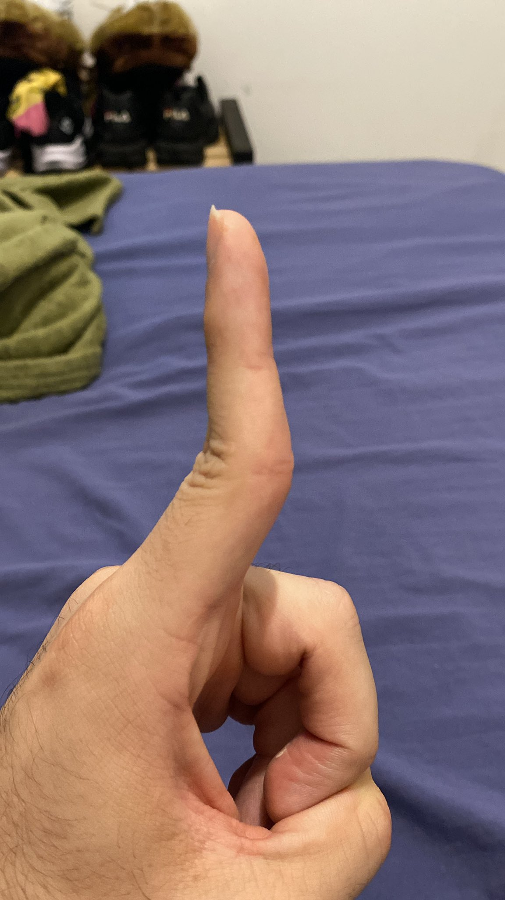

Relatório de uma pessoa gorda
1. Como ficar magro em 20 Anos
2. Minha evolução
3. Próximos Passos
O Tesouro Perdido foi encontrado na ilha de Cyberspace. A descoberta é importante, pois a caixa continha artefatos muito valiosos.
Detalhes da Descoberta:
- Localização da Caixa: Monte Sintaxe, Coordenada 12.
- Itens Encontrados:
- Mapa antigo
- Vocé parece muito GORDO PARCEIRO
- Amuletos de jade
- Status: Em avaliação.
- Imagem: dedotorto.
